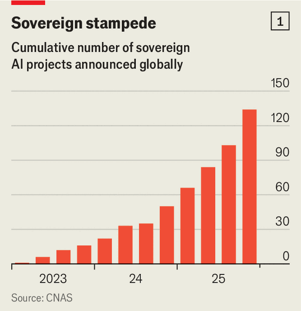
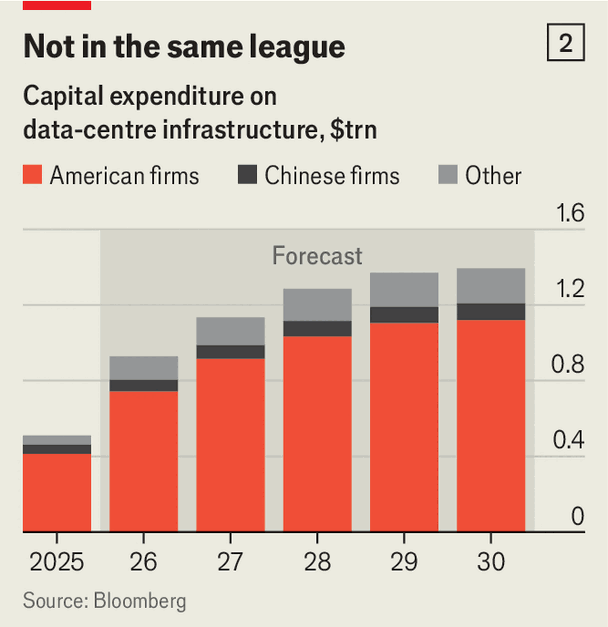

Sovereign AI, independent of America and China, is a pipe dream
But a degree of protection from coercion remains possible
July 16th 2026
WHEN THE leaders of the biggest Western economies gathered last month in the French Alps for the G7 summit, it was not just presidents and prime ministers in attendance. The bosses of America’s leading artificial-intelligence firms—Sam Altman of OpenAI, Sir Demis Hassabis of Google DeepMind and Dario Amodei of Anthropic—were seated alongside the political bigwigs. Even the stewards of the mightiest economies, it turns out, are buttering up the potentates of AI.
Days before the summit, America’s government had barred Anthropic from making its most advanced model available to foreigners. OpenAI soon imposed similar restrictions on some of its frontier systems. The move turned a simmering concern into a burning one: might countries without their own, home-grown AI firms end up excluded from the world-changing technology? Emmanuel Macron, France’s president, warned that no one would buy American AI if it could “turn off the switch” at will. The American AI labs’ Chinese rivals offer only faint reassurance. On July 7th Reuters reported that Chinese officials, too, were considering restricting foreigners’ access to leading AI models.
Caught between the world’s two AI superpowers, governments are increasingly pinning their hopes on “sovereign AI”: the idea that countries should limit their dependence on foreign providers of AI by actively developing domestic AI firms and infrastructure. Announcements of such initiatives are proliferating. The European Union has unveiled a technology-sovereignty package encompassing semiconductors, AI and cloud computing. Canada has launched its own plan to reduce reliance on American technology providers. India, Japan and Singapore are backing domestic AI infrastructure and models. The Centre for a New American Security (CNAS), a think-tank in Washington, estimates that the number of state-backed AI projects outside America and China grew fivefold over the course of 2024 and 2025 (see chart 1). Governments have announced investments of $70bn-plus in such initiatives, according to CNAS’s tally.

Yet turning these ambitions into reality will be extremely difficult. No matter what, most countries will still rely on American chips, Chinese open-source models or both to build their AI systems. Even then, most governments will find it prohibitively expensive to achieve anything remotely resembling AI sovereignty.
The incentive to seek it, however, is clear and compelling. Pablo Chavez of CNAS puts the restrictions on Anthropic in a “long line of events” demonstrating America’s willingness to use its technological dominion as a weapon. In the dying days of Joe Biden’s presidency in 2025, America proposed sweeping export controls that would have rationed access to advanced chips through a complex licensing regime. When Donald Trump became president a few weeks later he dropped the plan. But he has not hesitated to use America’s lead in AI as leverage in trade negotiations. The Department of Commerce is considering rules that would allow it to vet all sales of AI chips designed by American firms anywhere in the world. It might also insist that buyers allow inspections or monitoring to make sure chips are being used as promised. Another possible requirement could be to invest in American AI infrastructure in exchange for access.
Protecting themselves from coercion is not the only reason governments want to build their own “AI stack”, the layers of hardware and software on which AI depends. National security is another: it is awkward to use foreign, commercial AI for top-secret purposes, especially of a military nature. Governments also like the idea of models trained on their own languages, laws and norms. They worry, with some justification, about users’ sensitive, personal data falling into foreign hands. And policymakers want to reap the economic benefits of AI. They have seen how previous technological innovations—the internet, smartphones and cloud computing—entranced consumers and reshaped their economies while generating riches for American tech firms. They are keen to avoid a repeat.
The Anthropic cut-off was instructive, says Arthur Mensch of Mistral AI, a French model-maker. In an interview for The Economist’s Inside Tech video series, he argues that the imperative to develop sovereign AI runs much deeper than the risk of diplomatic strong-arming. The scale of the outflow of cash to America and China in a world where the pair continue to dominate AI would be so vast it would create “enormous instabilities”, he argues. Countries will find that unacceptable and so will be forced to invest in the ability to serve at least some demand for AI domestically.
Mr Mensch estimates (conservatively, he says) that within the next five or ten years, the European Union will be spending the equivalent of a tenth of its current bill for labour on AI tokens, or about around €1trn ($1.1trn) a year. If things stay as they are, the vast majority of that expenditure will flow directly to American cloud providers. Such outflows would hit the euro, increasing the cost yet more. That, he believes, would create an opportunity for a local enterprise to compete directly, even if its product is not of the same quality. Every country, he predicts, will need to make sure that whatever happens, “The AI can continue to run.”
Sovereignty looks different at each layer of the stack. Start at the bottom: computing power (“compute”, in the jargon), largely in the form of AI chips. The market for those chips is dominated by Nvidia, whose processors account for two-thirds of the world’s AI compute. Chips designed by Google, AMD and Amazon, all American firms, make up much of the remainder.
The alternatives are limited. Chinese firms such as Huawei and Cambricon have made impressive strides despite being cut off by American trade restrictions from the most advanced chipmaking equipment. But they remain some distance from the frontier. Huawei’s Ascend 910C, one of China’s most advanced AI chips, provides roughly a fifth of the performance of Nvidia’s latest offering. Performance is not the only constraint. Chinese manufacturers are prioritising domestic customers, and demand still exceeds available capacity. Even if Chinese chips continue to improve, shortages are likely to persist for years.
Aiming for self-sufficiency in hardware is therefore unrealistic. Kevin Xu of Interconnected Capital, an AI-focused hedge fund, argues that sovereignty should be understood less as independence than as control. If the machines being used to run AI models sit within a country’s borders, governments retain a degree of autonomy even if future access to chips is restricted. “Is your factory going to still run if the US government decides that suddenly you can’t?” asks Mr Mensch. The latest AI chips have a lifespan of at least five or six years.
Chips are only part of the equation, however. Running AI places huge demands on the electricity grid. According to the International Energy Agency, an intergovernmental forecaster, a typical AI data centre consumes as much electricity as 100,000 households; the largest may use around 20 times as much.
Countries like Norway, Saudi Arabia and the United Arab Emirates (UAE) look like attractive places to build data centres because they have abundant, reliable power. The reverse is true in most of Europe, however: grids are congested, there are long waits for connections and electricity prices are high. For many countries, producing enough power for AI will be as difficult as securing enough chips.
Move one layer higher and the picture improves. Most sovereign-AI projects are built on open-source models. These are appealing not simply because they cost less, but also because they offer a higher degree of control. Users can modify them, host them locally and avoid dependence on the proprietary systems of firms such as OpenAI and Anthropic, which might be ordered by Uncle Sam to revoke or restrict access. Although open-source models are not at the cutting edge, the gap is narrow enough not to matter for many applications. Chinese firms have become particularly competitive. On OpenRouter, a marketplace for AI models, Chinese ones have overtaken American ones in usage. The day after the restrictions on Anthropic took effect, Z.ai, a Chinese AI company, released GLM-5.2, an open-source model that quickly climbed to fourth place on Artificial Analysis, a benchmarking site.
Yet if China were to impose the same sort of export controls on its most capable models as America has, users of Chinese AI would simply be exchanging one form of dependency for another. In June Joe Tsai, chairman of Alibaba, was asked at a conference how Europe could trust China not to follow America’s lead in cutting off access to frontier models. “You can’t,” he replied candidly. “But here’s the thing. Right now, all of your eggs are in one basket. Why not get a second basket?”
As AI becomes ever more powerful, Chinese officials appear to be thinking about the strategic advantages prowess in AI can confer, just like their American counterparts, and also the risks of its falling into the wrong hands. Reuters reported that Chinese regulators had been discussing the possibility of export bans on future cutting-edge models with Chinese AI firms. It also claimed that they were considering making unauthorised disclosures of intellectual property related to AI models an offence under China’s draconian national-security laws.
Perhaps even harder than acquiring the necessary hardware and software for sovereign AI is getting hold of the people needed to operate them. Mr Xu argues that this layer of the stack receives the least attention. Hardware can be imported and software downloaded. Building a workforce that can install, maintain and optimise increasingly complex AI systems is much harder. Training such engineers takes years. Hiring them from abroad is possible, but only at huge cost, as governments vie with deep-pocketed technology firms to recruit from a tiny pool of specialists.
That, in turn, hints at the biggest constraint of all: money. Governments trying to conjure up sovereign AI have adopted a range of financing models. In the Gulf the state is the builder. Saudi Arabia has entrusted the task to Humain, a government-backed company created to develop AI infrastructure and data centres. In the UAE the task has fallen to G42, an AI firm partly owned by Mubadala, the country’s sovereign-wealth fund. The two countries are planning to invest more than $100bn.
Close state involvement helps secure the necessary hardware. During Donald Trump’s visit to the Middle East last year, governments in the Gulf put access to chips high on the agenda. Saudi Arabia said it planned to buy “several hundred thousand” of Nvidia’s top-end processors over the following five years. The UAE is reportedly aiming far higher, at half a million chips a year. On July 10th the Trump administration removed export controls on sales of advanced chips to the UAE, citing its support for America’s war with Iran.
Elsewhere governments are acting more as catalysts than as builders. France is backing Mistral AI, a home-grown but private model-developer, by helping recruit state-backed investors and foreign partners. In May SoftBank, a Japanese conglomerate, pledged to invest up to $85bn to build Europe’s biggest AI facility in France. Britain has launched a £500m ($670m) sovereign-AI fund to foster domestic startups. It has also set up a widely admired safety agency, the AI Security Institute, which has helped keep the country involved in the industry.
India is attempting a “third way” by focusing on providing AI cheaply, with the aim of solving local problems in local languages. It is channeling these ambitions through a mix of state-linked firms and private partnerships.. The government has allocated about $1bn to domestic AI infrastructure, Indian-language models and public data sets.
Whether the capital is public or private, however, it will be difficult to muster enough of it. AI infrastructure is ruinously expensive. A one-gigawatt (GW) data centre—the scale at which advanced AI is increasingly conducted—costs roughly $50bn. Over two-thirds of that bill comes from computing equipment, chiefly chips.

Gartner, a consultancy, estimates that between 2026 and 2030 countries outside America and China could add more than 50GW of data-centre capacity, much of it for AI (see chart 2). That would entail investment of $2trn or more. Yet the combined capital expenditure of all providers bar Chinese and American firms, including sovereign-AI projects and neoclouds, which rent out compute, will amount to only around $800bn over the same period.
Someone else will have to foot the bill. America’s hyperscalers look like the obvious candidates. Alphabet, Amazon, Meta, Microsoft and Oracle are expected to invest around $5trn by the end of the decade, most of it on AI infrastructure. Between a fifth and a third of that is likely to be spent outside America, implying foreign investments of roughly $1trn-1.5trn. Few sovereign-AI projects can compete with that.
For the cloud giants, this is an opportunity. For years they have sold private- and public-sector customers technological independence: data centres in their home country, domestic operating partners and guarantees that data will remain within national borders. Sovereign AI is a logical extension of this offer. The firms would provide customers control over where models are run and where the data are stored.
America’s restrictions on Anthropic both hinder and help this sales pitch. They help because the case for developing protection of any sort from the American authorities’ whims has become that much stronger. But they hinder because potential customers will now be wondering whether neoclouds might become yet another means by which America’s government can coerce other countries.
Microsoft has acknowledged the concern. Even close allies, it notes, worry that dependence on American cloud providers could leave them vulnerable to a “kill switch”: an executive order, export restriction or other policy decision that abruptly cuts off access during a geopolitical dispute. The company called for explicit assurances from the American government that such powers will not be used against friendly countries. The idea is not far-fetched: last year Microsoft was obliged to suspend the email account of Karim Khan, the chief prosecutor of the International Criminal Court, after the Trump administration subjected him to sanctions.
The impediments to sovereign AI, in short, are many and daunting. Full technological independence at all levels of the stack is nigh on impossible. Even less ambitious schemes may be cripplingly expensive, with uncertain benefits. AI infrastructure depreciates quickly. Chips become obsolete within five or six years; software evolves even faster. Governments could spend billions on facilities that are outdated before they are fully up and running.
Yet excess caution also carries a monumental risk: that countries leave themselves at the mercy of the AI superpowers for a technology that seems likely to make or break their economies in future. The quest for sovereign AI is therefore bound to continue, albeit in a circumscribed form. Governments will need to decide which parts of the stack they want to recreate at home and which dependencies are worth living with. Given the alternatives, even a little sovereignty may go a long way. ■